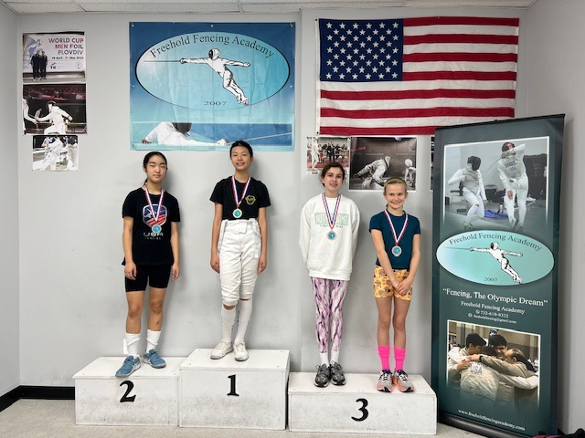
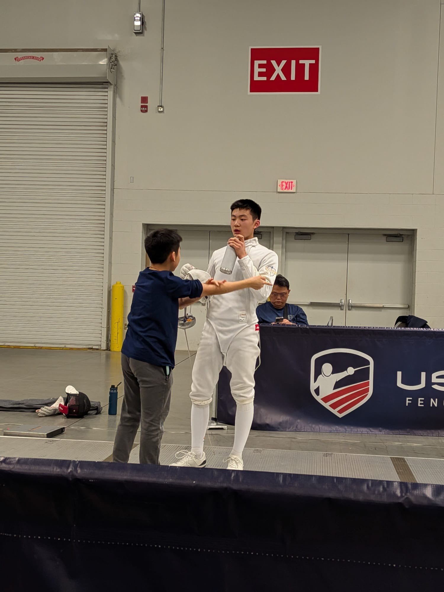

Every so often a national tournament lands close enough to drive to. The March North American Cup is one of them: USA Fencing brings it to the Atlantic City Convention Center March 5–8, 2027, and it is built for younger fencers, with Youth 10, Youth 12, Youth 14 and Division II events in all three weapons. Spectators get in free.
Who can enter? Youth 14 has no qualifying path beyond the age group. Youth 10 and Youth 12 fencers need one Regional Youth Circuit (RYC) or Super Youth Circuit (SYC) event this season in the same age group and weapon (Youth 12 fencers on the national point standings also qualify). Division II is for fencers rated C, D or E, or unrated. Cobra this weekend is an SYC, so Youth 10 and Youth 12 entrants there check that box.
Registration opened Nov. 18. Regular fees run through Jan. 6: $225 for one event, $320 for two, $415 for three. After that the price triples ($675 for one event), though late entries stay open until 5 p.m. local time the night before. Skip an event without withdrawing by 5 p.m. the day before and the fine is $250 per event. USA Fencing’s GRACE program can waive NAC entry fees for families who need help; its March NAC deadline has not been set.
The day‑by‑day schedule isn’t posted yet. Parking details are on the convention center’s website, and USA Fencing books hotels through its official provider.
Already entered from Elite FC: Noah Gore (Y14 Men, Fri. Mar. 5; Division II Men, Sat. Mar. 6), Caden Wu (Division II Men, Sat.), Christina Jiang and Mila Siu (Y12 Women, Sat.), and Mila Siu (Y14 Women, Sun. Mar. 7).
The FIE named Kruz Schembri, the world’s No. 1 junior men’s epee fencer, a co‑winner of its 2026 Fair Play Trophy at its annual awards gala in Budapest on Sunday, Nov. 22. The award recognized a moment at this year’s Senior World Championships in Hong Kong: Schembri was tied 13–13 in a round‑of-32 bout with Italy’s Davide Di Veroli when he was awarded a touch that would have put him one away from winning. He told the referee he had hit himself and refused the touch. Di Veroli won the bout 15–13 and went on to take silver at the championships. Schembri shared the trophy with Gilles Martinage, the French team’s armorer, who had fixed Schembri’s weapons in Hong Kong after three of his four blades failed inspection. Schembri, 20, represents the U.S. Virgin Islands. The same gala honored the season’s other epee No. 1s: Alberta Santuccio of Italy and Mohamed Elsayed of Egypt among the seniors, and Sofija Prošina of Latvia among junior women.
Elite FC will be closed Wednesday, Nov. 25, through Friday, Nov. 27, for the Thanksgiving holiday, including Friday, when the Cobra Challenge begins. Regular classes resume Saturday, Nov. 28.
The November NAC was held at the Greater Columbus Convention Center in Columbus, Ohio, Nov. 20–23. Cadet, Junior and Division I events were split into two competitions, Elite and Challenger, whenever an event had 169 or more entries. Places are within each field, not across the combined entry list. The four‑day event drew 257 official competitors in Cadet Men, 357 in Junior Men, 221 in Junior Women and 358 in Division I Men.
Nico Ng finished 15th of 136 in Cadet Men’s Epee (Challenger) on Saturday, Nov. 21. Three Elite FC fencers were in Columbus: Nico, Athreya Aravind and Anayaa Sheth, across Cadet, Junior and Division I events. The next national tournament on the club calendar is the December Super Junior and Cadet Circuit in Milwaukee, Dec. 4–6.
This year’s Elite FC holiday party will be Friday, Dec. 11. There will be food, drinks and snacks, and everyone is welcome. Please mark your calendars; the club hopes you can join to celebrate everything we have accomplished.
| Fencer | Event | Finish |
|---|---|---|
| November NAC · Nov. 21 | ||
| Nico Ng | Cadet Challenger | 15th of 136 |
| Freehold Youth · Nov. 22 | ||
| Christina Jiang | Y12 Women | 1st of 4 |
Cadet place is in the Challenger field, not the combined entry list.

Christina Jiang in first place after winning Youth 12 Women’s Epee at Freehold Fencing’s November Youth on Sunday, Nov. 22. The official field was four fencers.
Photo: Elite Fencers Club

Remy Ng coaching Nico Ng on the strip at the November NAC in Columbus. Nico finished 15th of 136 in Cadet Men’s Epee (Challenger) on Nov. 21.
Photo: Elite Fencers Club
| Event | Elite FC |
|---|---|
| Fri. Nov. 27 | |
| Y14 Men | Connor Anderson, Noah Gore, Kian Jaising, Remy Ng, Ash Shah‑Mirani |
| Cadet Women | Amina Gore, Olivia Hayes, Stella Kuo, Lillian Liu, Mila Siu, Penny Young |
| Y10 Men | Bryce Cheng, Joshua Jeong |
| Sat. Nov. 28 | |
| Y12 Women | Christina Jiang, Stella Kuo, Mila Siu, Penny Young |
| Y12 Men | Kian Jaising, Joshua Jeong, Remy Ng |
| Sun. Nov. 29 | |
| Y14 Women | Stella Kuo, Mila Siu, Penny Young |
| Cadet Men | Connor Anderson, Nico Ng, Caden Wu |
Sixteen Elite FC fencers, 26 entries, all approved. Close of registration is on the official USA Fencing page (Nov. 24). Youth 14 Men is at 140 and capped.
| Event | Elite FC |
|---|---|
| Fri. Dec. 4 | |
| Cadet Men | Nico Ng |
| Sat. Dec. 5 | |
| Junior Women | Amina Gore |
| Junior Men | Nico Ng |
| Sun. Dec. 6 | |
| Cadet Women | Amina Gore, Anayaa Sheth |
Baird Center. Three Elite FC fencers, five approved entries, as of Nov. 23.
The Cobra Challenge SYC/RCC is Friday through Sunday, Nov. 27–29, at the Meadowlands Expo Center in Secaucus, a short trip from the club. Sixteen Elite FC fencers have 26 approved entries in Youth 10, Youth 12, Youth 14 and Cadet epee. Several fields are already full: Youth 14 Men has 140 official competitors, Youth 14 Women 133, Cadet Men 126, Youth 12 Women 106 and Cadet Women 105.
For parents still learning the youth‑tournament alphabet, Cobra is an SYC — a Super Youth Circuit, not simply a larger Regional Youth Circuit event. The two circuits award different points, feed different standings and open different paths to national tournaments.
A Regional Youth Circuit tournament, or RYC, awards only regional points, and only to fencers competing in their home region. Everyone in the event earns some. The formula is ((number of entries minus place plus 1) divided by the number of entries) times 100, so the winner always receives 100 points, whatever the field size. A fencer’s best three RYC results in that region count toward the Regional Youth Point Standings. Those points do not appear on the national point lists.
A Super Youth Circuit tournament awards national youth points, and a fencer from any region can earn them by placing high enough. Points go to the top 40 percent of the competitive field — current competitive members in the starting field — rounded up, to a maximum of 64th place. At least three fencers must compete. Only a fencer’s single best SYC result in each age category counts. USA Fencing then builds the Youth Point Standings from the four highest results among that SYC, North American Cups and National Championships in the eligible age groups.
That is why an SYC carries more weight for younger fencers. To enter Youth 10 or Youth 12 at the March NAC in Atlantic City, a fencer must have competed in one RYC or one SYC this season in the same age group and weapon (Youth 12 fencers on the national point standings also qualify). Youth 14 has no such qualifying path for the March NAC; age is enough. For the USA Fencing National Championships in the summer, the national point standings — which an SYC result can help build — are one qualifying path in Youth 10, Youth 12 and Youth 14. Regional RYC points are another: 60 Youth 12 regional points can qualify a Youth 10 fencer, 70 Youth 12 or 160 Youth 14 regional points a Youth 12 fencer, and 160 Youth 14 regional points a Youth 14 fencer, each from the fencer’s best three regional results.
Cobra is a local SYC, which is unusual. Super Youth Circuit tournaments are held throughout the country, and many families travel to them. This one is in Secaucus. There are no rating requirements for an SYC or an RYC, only a current competitive membership and the right age group.
The SYC format is one round of pools, with every fencer advancing to direct elimination. Youth 10 direct‑elimination bouts are to 10 touches, in two three‑minute periods. Youth 12 and Youth 14 are to 15.
Cobra also runs Cadet events as a Regional Cadet Circuit, not as an SYC, and those results do not earn youth national points.
| Date | What’s due |
|---|---|
| Nov. 30 | Fairfax Challenge: last day of regular fees; triple from Dec. 1 |
| Dec. 10 | Z1 RYC/RJCC: late registration closes |
| Jan. 6 | March NAC: last day of regular fees; late fees triple |
| Jan. 7 | Junior Olympics: late registration ends |
| Jan. 8 | N.J. high school: independent fencers’ entries close |
USA Fencing fee deadlines are 11:59 p.m. Pacific. Z1 regular fees ended Nov. 23.
Packing for Cobra this weekend? Rule t.117 says a fencer must come to the strip with two weapons, two body cords and two mask cords, one of each as a spare, all in perfect working order. Arriving without the second weapon or body cord, or with equipment that doesn’t work or doesn’t conform, is a first‑group offense on the penalty chart (t.71–t.73, t.117): a Yellow Card the first time, then a Red Card, which gives the opponent a touch. Check tips and cords at home, not in line at the strip.
NCAA fencing season opened the first weekends of November. NJIT hosted its first home meet since 2019 on Nov. 1 (men 2–0, women 1–1), then fenced the Drew Invitational in Madison, N.J., on Nov. 7 and the Columbia Invitational in New York on Nov. 8. Duke beat North Carolina in their opener.